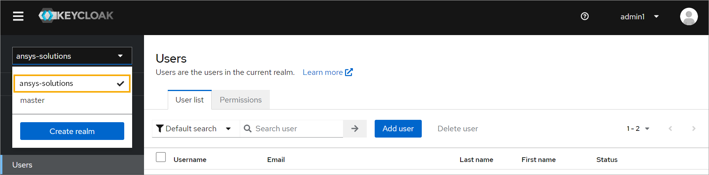
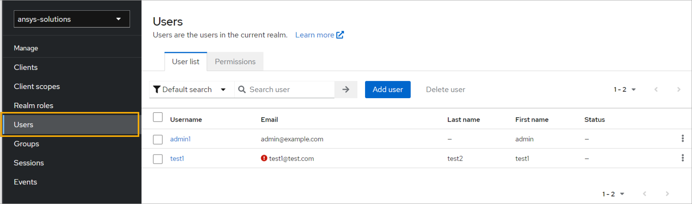
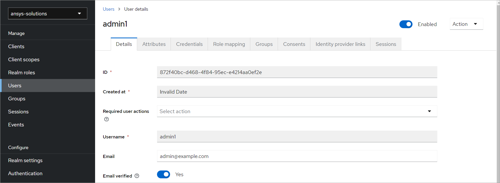

Manage users#
The Keycloak service is an open-source identity and access management solution that provides authentication, authorization, and single sign-on capabilities for applications and services.
To manage users in Keycloak, perform these steps:
Note
Make sure that the port on which Keycloak is running is accessible.
If you have changed the default port, replace 8011 with the correct port number.
Open the Keycloak Admin Console at http://keycloak.local.se:8011/auth/.
On the Keycloak Admin Console welcome page, click Administration console.
On the Keycloak Log in dialog, log in with Keycloak administrator credentials.
The Keycloak Admin Console interface opens.
In the left pane, select the ansys-solutions realm.
In the left pane, click Users to open the Users page.
By default, it opens to the User list tab, which shows all the registered users for the realm.
In the list, click a user name to open the User details page, where you can view and update information for the user.

See also
For more information, see the official Using the Keycloak Administration Console documentation.